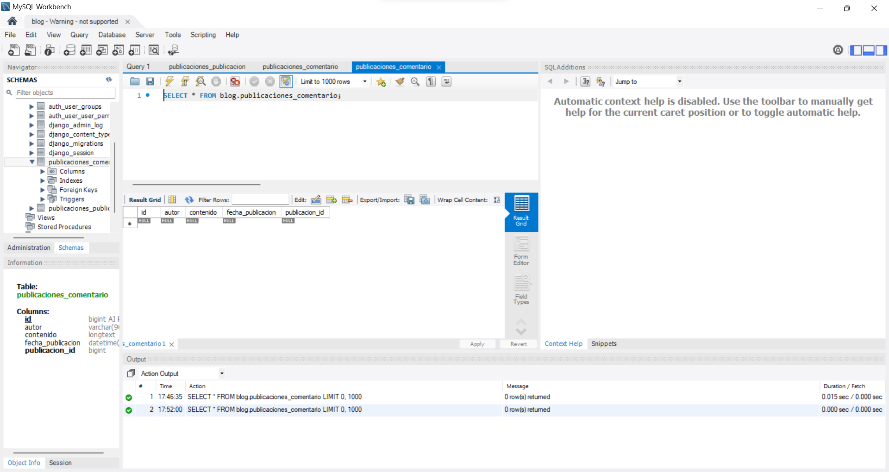
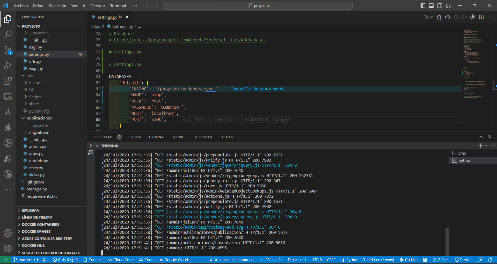
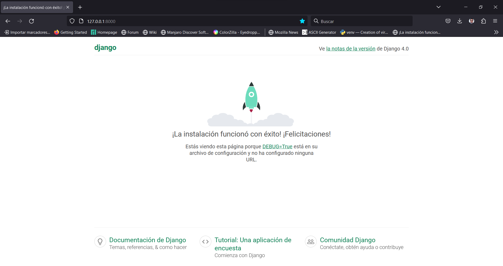

Módulo 2: Modelos y Bases de Datos.
Diseño de Modelos en Django
En este diagrama, se muestra el flujo de diseño de modelos en Django.
+-----------------------+
| |
| Definir el modelo |
| como una clase |
| Python que hereda de |
| models.Model |
| |
+----+-------------+----+
| |
| |
v v
+-------------------+ +------------------+
| | | |
| Definir campos | | Definir métodos |
| y atributos | | adicionales |
| del modelo | | del modelo |
| | | |
+--------+----------+ +------+-----------+
| |
| |
v v
+--------------------+ +--------------------+
| | | |
| Aplicar migraciones| | Definir __str__ |
| para reflejar los | | método para |
| cambios en la | | representación |
| base de datos | | del modelo |
| | | |
+--------------------+ +--------------------+1. Definimos el Modelo.
En Django, los modelos son la base para diseñar la estructura de la base de datos de nuestra aplicación web.
Cada modelo representa una tabla en la base de datos y define los campos que estarán presentes en dicha tabla.
Los modelos son definidos como clases Python que heredan de models.Model, lo que permite que Django maneje automáticamente la creación y gestión de la base de datos.
Creación de un Modelo.
Para crear un modelo en Django, primero definimos una clase Python que representa la tabla en la base de datos. Por ejemplo, si deseamos crear un modelo para representar las publicaciones en nuestro blog, podemos definirlo de la siguiente manera:
from django.db import models
class Publicacion(models.Model):
titulo = models.CharField(max_length=200)
contenido = models.TextField()
fecha_publicacion = models.DateTimeField()En este ejemplo, hemos definido el modelo Publicacion con tres campos: titulo, contenido y fecha_publicacion.
Cada campo se representa mediante un atributo de la clase, donde: models.CharField representa un campo de texto, models.TextField representa un campo de texto más largo y models.DateTimeField representa una fecha y hora.
2. Definir Métodos del Modelo.
Además de los campos, también podemos definir métodos en el modelo para realizar acciones específicas o para dar formato a los datos. Por ejemplo, podríamos agregar un método que nos devuelva una representación más legible de la publicación:
from django.db import models
class Publicacion(models.Model):
titulo = models.CharField(max_length=200)
contenido = models.TextField()
fecha_publicacion = models.DateTimeField()
def __str__(self):
return self.tituloEn este caso, hemos definido el método str que se ejecutará cuando necesitemos obtener una representación de texto del objeto Publicacion.
En este caso, hemos decidido que la representación será simplemente el título de la publicación.
Para poder probar los cambios que hemos realizado vamos a registrar nuestro modelo en el archivo admin.py
# admin.py
from .models import Publicacion
admin.site.register(Publicacion)3. Aplicar Migraciones.
Una vez que hemos definido nuestro modelo, necesitamos aplicar las migraciones para que los cambios se reflejen en la base de datos.
# Ejecutar en la terminal o consola
python manage.py makemigrations
python manage.py migrateCon estos pasos, hemos diseñado nuestro modelo de Publicaciones en Django y aplicado las migraciones para crear la tabla correspondiente en la base de datos. Ahora estamos listos para utilizar nuestro modelo y almacenar datos en la base de datos.
Finalmente creamos un superusuario para acceder a la administración de nuestro proyecto.
python manage.py createsuperuserLlenamos un pequeño formulario que nos pide: nombre de usuario, correo electrónico (no obligatorio), password, repeat again password.
Y listo para poder acceder a la administración de nuestro proyecto nos dirigimos a la siguiente url http://127.0.0.1:8000/admin
De forma gráfica ingresamos nuestro usuario y contraseña creado.

Ejemplo de las clases Publicación y Comentario en Django:
# En el archivo models.py de la aplicación "Publicaciones"
from django.db import models
class Publicacion(models.Model):
title = models.CharField(max_length=100)
content = models.TextField()
pub_date = models.DateTimeField(auto_now_add=True)
def __str__(self):
return self.title
class Comentario(models.Model):
publicacion = models.ForeignKey(Publicacion, on_delete=models.CASCADE)
author = models.CharField(max_length=50)
content = models.TextField()
pub_date = models.DateTimeField(auto_now_add=True)
def __str__(self):
return f"Comentario de {self.author} en {self.publicacion}"En este ejemplo, hemos definido dos clases:
La clase “Publicacion”: Representa una publicación en el blog y tiene tres campos: title (título de la publicación), content (contenido de la publicación) y pub_date (fecha de publicación).
La fecha de publicación se establece automáticamente utilizando la función auto_now_add=True.
También hemos definido un método “str” para que al imprimir una instancia de la clase, se muestre el título de la publicación.
La clase “Comentario”: Representa un comentario en una publicación de publicacion específica y tiene cuatro campos: publicacion (clave externa que se relaciona con la publicacion al que pertenece el comentario), author (nombre del autor del comentario), content (contenido del comentario) y pub_date (fecha de publicación del comentario).
Al igual que en la clase Publicacion, hemos definido un método “str” para mostrar información útil al imprimir una instancia de la clase.

Migraciones de la Base de Datos
Las migraciones en Django son una forma de gestionar los cambios en la estructura de la base de datos de manera controlada y consistente.
Representan los cambios en la estructura de la base de datos en forma de archivos Python y se utilizan para crear, modificar o eliminar tablas y campos.
Cuando definimos nuestros modelos en Django (como se mostró en el ejemplo de la clase “Publicación” y “Comentario”), estamos describiendo la estructura de nuestras tablas en la base de datos.
Sin embargo, antes de que estos modelos se puedan utilizar, Django necesita traducirlos en el lenguaje específico del motor de base de datos que estamos utilizando (por ejemplo, PostgreSQL, MySQL, SQLite, etc.).
Es aquí donde entran en juego las migraciones.
Cuando creamos o modificamos modelos, Django genera automáticamente archivos de migración que contienen instrucciones para aplicar los cambios necesarios en la base de datos. Cada migración representa un paso en la evolución de la estructura de la base de datos.
Comandos para crear y aplicar migraciones:
python manage.py makemigrationsEste comando se utiliza para crear una nueva migración a partir de los cambios detectados en los modelos. Cuando ejecutamos este comando, Django analiza los modelos definidos en nuestra aplicación y compara la estructura actual con la estructura de la última migración aplicada.
Luego, genera una nueva migración que contiene las instrucciones para llevar la base de datos a su estado actual.
python manage.py migrateUna vez que hemos creado una o varias migraciones, utilizamos este comando para aplicar esas migraciones pendientes y modificar la base de datos de acuerdo con los cambios en los modelos. Django realiza las operaciones necesarias en la base de datos para reflejar la estructura actual de los modelos definidos en nuestra aplicación.
💡Recuerda: “Es importante ejecutar estos comandos cada vez que realizamos cambios en los modelos para mantener la coherencia entre la estructura de la base de datos y la estructura definida en los modelos, garantizando así la integridad y consistencia de nuestros datos.”
Consultas a la Base de Datos con el ORM de Django.
Cuando construimos aplicaciones web, a menudo necesitamos interactuar con una base de datos para almacenar y recuperar datos.
Django facilita esta tarea mediante su Object-Relational Mapping (ORM).
Pero, ¿Qué es exactamente el ORM y cómo podemos hacer consultas a la base de datos utilizando esta funcionalidad?
Object-Relational Mapping (ORM): Una forma amigable de interactuar con la base de datos.
Imagina que tienes una biblioteca y quieres mantener un registro de los libros y sus autores en una base de datos. Tradicionalmente, tendrías que escribir consultas SQL para agregar, actualizar o recuperar información. Sin embargo, con el ORM de Django, puedes utilizar objetos de Python para realizar estas tareas sin tener que escribir consultas SQL directamente. ¡Es como si el ORM tradujera automáticamente tus interacciones con objetos de Python a instrucciones SQL!
Ejemplo de Consulta con el ORM de Django
Supongamos que tienes dos modelos en Django: Publicacion con los campos titulo, contenido y fecha_publicacion, y Comentario con los campos texto y fecha_comentario.
Queremos obtener todas las publicaciones que contengan comentarios y mostrar sus títulos, fechas de publicación y la cantidad de comentarios que tienen.
from miapp.models import Publicacion, Comentario
# Realizamos una consulta utilizando el ORM de Django
publicaciones_con_comentarios = Publicacion.objects.filter(comentario__isnull=False)
# Mostramos los resultados
for publicacion in publicaciones_con_comentarios:
cantidad_comentarios = Comentario.objects.filter(publicacion=publicacion).count()
print(f"Título: {publicacion.titulo}, Fecha de Publicación: {publicacion.fecha_publicacion}, Comentarios: {cantidad_comentarios}")En este ejemplo, la función filter(comentario__isnull=False) nos permite obtener todas las publicaciones que tienen comentarios, es decir, filtramos aquellas publicaciones donde el campo comentario no es nulo.
Luego, utilizamos un bucle for para recorrer los resultados y, para cada publicación, realizamos una nueva consulta para contar la cantidad de comentarios asociados a esa publicación utilizando Comentario.objects.filter(publicacion=publicacion).count().
Así, podemos mostrar los títulos de las publicaciones, sus fechas de publicación y la cantidad de comentarios que tienen.
Diagrama de Consulta con ORM de Django.
+----------------+
| Base de Datos |
+----------------+
|
v
+----------------+
| Modelo |
| (Publicacion) |
+----------------+
|
v
+----------------+
| Consulta |
| (filter) |
+----------------+
|
v
+----------------+
| Resultado |
+----------------+En este diagrama, el modelo Publicacion representa la estructura de la tabla en la base de datos.
La consulta se realiza a través del ORM de Django, que traduce la interacción con el modelo en una consulta SQL y devuelve el resultado.
El ORM de Django nos permite realizar consultas de una manera más legible y amigable, lo que facilita enormemente el manejo de datos en nuestras aplicaciones web.
Relaciones entre Modelos.
+--------------------+ +--------------------+
| Publicacion | | Autor |
+--------------------+ +--------------------+
| - id | | - id |
| - titulo | | - nombre |
| - contenido | | - correo |
| - autor (foránea) | +--------------------+
+--------------------+
|
v
+--------------------+
| Relación |
| (Clave Foránea) |
+--------------------+
|
v
+--------------------+
| Resultado |
+--------------------+Django facilita el establecimiento de relaciones entre modelos mediante claves foráneas y claves primarias.
Por ejemplo,
En un blog, un modelo Publicacion podría tener una clave foránea a un modelo Autor”, lo que permitiría relacionar cada publicación con su respectivo autor.
Además, Django también soporta diferentes tipos de relaciones como Uno a Uno (por ejemplo, un modelo Perfil asociado a un modelo Usuario), Uno a Muchos (por ejemplo, un modelo Categoría que puede tener múltiples publicaciones) y Muchos a Muchos (por ejemplo, una relación de Seguidores entre usuarios).
Estas relaciones son fundamentales para organizar y acceder a los datos de manera estructurada en una aplicación Django.
Clave Primaria, Clave Foránea y Relaciones entre Modelos en Django.
En Django, los modelos representan la estructura de las tablas en la base de datos. Cada modelo se define como una clase Python que hereda de models.Model. Los atributos de la clase representan los campos de la tabla, y entre ellos, destacamos las claves primarias y las claves foráneas.
Clave Primaria.
Ejemplo:
from django.db import models
class Autor(models.Model):
nombre = models.CharField(max_length=100)
pais = models.CharField(max_length=50)
def __str__(self):
return self.nombreLa clave primaria es un campo único que identifica de forma exclusiva cada registro en una tabla.
Por defecto, Django crea automáticamente un campo id como clave primaria para cada modelo, pero también es posible definir una clave primaria personalizada utilizando el atributo primary_key=True.
En este ejemplo, la tabla Autor tendrá una clave primaria id generada automáticamente. La columna id es un campo único que identificará de forma única a cada autor en la base de datos.
Clave Foránea.
Ejemplo:
from django.db import models
class Libro(models.Model):
titulo = models.CharField(max_length=200)
autor = models.ForeignKey(Autor, on_delete=models.CASCADE)
def __str__(self):
return self.tituloLa clave foránea es un campo que hace referencia a la clave primaria de otra tabla, estableciendo una relación entre ambas tablas.
Esto indica que el valor del campo de la clave foránea en una tabla debe coincidir con el valor de la clave primaria en la otra tabla.
En este ejemplo, el modelo Libro tiene un campo autor que es una clave foránea que hace referencia al modelo Autor. Cada libro está relacionado con un autor específico, y la opción on_delete=models.CASCADE indica que si se elimina un autor, todos los libros asociados a ese autor también se eliminarán automáticamente.
Relaciones entre Modelos de Django:
Relación de Uno a Muchos (OneToMany): Un objeto de un modelo está relacionado con varios objetos de otro modelo.
Se logra utilizando el campo ForeignKey.
from django.contrib.auth.models import User
from django.db import models
class Publicacion(models.Model):
titulo = models.CharField(max_length=100)
contenido = models.TextField()
autor = models.ForeignKey(User, on_delete=models.CASCADE)Relación de Muchos a Muchos (ManyToMany): Varios objetos de un modelo están relacionados con varios objetos de otro modelo. Se logra utilizando el campo ManyToManyField.
from django.db import models
class Etiqueta(models.Model):
nombre = models.CharField(max_length=50)
class Producto(models.Model):
nombre = models.CharField(max_length=100)
etiquetas = models.ManyToManyField(Etiqueta)Relación de Uno a Uno (OneToOne): Un objeto de un modelo está relacionado con exactamente un objeto de otro modelo, y viceversa. Se logra utilizando el campo OneToOneField.
from django.contrib.auth.models import User
from django.db import models
class Perfil(models.Model):
usuario = models.OneToOneField(User, on_delete=models.CASCADE)
fecha_nacimiento = models.DateField()Estas relaciones nos permiten asociar objetos de diferentes modelos en la base de datos, lo que es esencial para construir aplicaciones web más complejas.
Django facilita el manejo de estas relaciones, lo que nos permite desarrollar aplicaciones de forma más legible y amigable.
Django ofrece una potente forma de establecer relaciones entre modelos, lo que nos permite diseñar y construir aplicaciones web más complejas y ricas en datos.
La elección del tipo de relación dependerá de la lógica de negocio y los requerimientos específicos de la aplicación.
Ejemplo de Conexión del Proyecto Blog con Bases de Datos
A continuación, se presentará un ejemplo de configuración de Django para conectar el proyecto de blog a tres bases de datos diferentes: SQLite, MySQL, MongoDB y PostgreSQL.
SQLite:
SQLite es una base de datos incorporada en Django por defecto. No requiere configuración adicional para usarla, ya que Django creará automáticamente un archivo de base de datos SQLite en el directorio del proyecto.
# En el archivo settings.py del proyecto "mi_blog"
DATABASES = {
'default': {
'ENGINE': 'django.db.backends.sqlite3',
'NAME': BASE_DIR / 'db.sqlite3',
}
}MySQL:
Para conectar la base de datos de MySQL de forma local en tu máquina, necesitarás seguir estos pasos:
Instalar MySQL Server: Lo primero que necesitas es tener instalado el servidor de MySQL en tu máquina. Puedes descargar la versión correspondiente para tu sistema operativo desde el sitio web oficial de MySQL: https://dev.mysql.com/downloads/mysql/
Configurar el servidor: Una vez que hayas instalado MySQL, debes configurar el servidor.
Durante la instalación, se te pedirá establecer una contraseña para el usuario “root” que será el administrador del servidor.
Asegúrate de recordar esta contraseña, ya que la necesitarás más adelante.
Iniciar el servidor: Después de instalar y configurar MySQL, debes iniciar el servidor.
Esto puede variar dependiendo de tu sistema operativo, pero generalmente puedes hacerlo desde la línea de comandos o utilizando un programa específico para administrar servidores de bases de datos.
Verificar la conexión: Una vez que el servidor esté en funcionamiento, verifica que puedas conectarte a él.
Puedes hacerlo desde la línea de comandos utilizando el cliente de MySQL o usando una herramienta de administración como phpMyAdmin.
Crear una base de datos: Antes de conectar Django a la base de datos, necesitas crear una base de datos vacía para tu proyecto.
Puedes hacerlo desde el cliente de MySQL o desde una herramienta de administración.
Configurar Django para usar MySQL: Ahora que tienes el servidor de MySQL funcionando y una base de datos creada, puedes configurar Django para que utilice MySQL como base de datos, puedes instalar el cliente de MySQL MySQL Workbench.
Ahora es necesario instalar el connector entre Django y nuestra base de datos, lo podemos hacer con el gestor de paquetes pip
pip install mysqlclientAhora vamos a configurar Django.
Para hacerlo, modifica el archivo settings.py de tu proyecto Django y ajusta la configuración de la base de datos:# settings.py
DATABASES = {
'default': {
'ENGINE': 'django.db.backends.mysql',
'NAME': 'nombre_de_la_base_de_datos',
'USER': 'nombre_de_usuario',
'PASSWORD': 'contraseña_del_usuario',
'HOST': 'localhost',
'PORT': '3306',
}
}Asegúrate de reemplazar nombre_de_la_base_de_datos, nombre_de_usuario y contraseña_del_usuario con los valores adecuados para tu configuración de MySQL.
- Realizar migraciones: Una vez configurada la base de datos en Django, es necesario aplicar las migraciones para crear las tablas y campos correspondientes. Ejecuta el siguiente comando para aplicar las migraciones:
python manage.py migrateVerificar la conexión: Finalmente, verifica que la conexión con la base de datos de MySQL se haya establecido correctamente y que puedas realizar consultas y operaciones desde tu proyecto Django.
Con estos pasos, tendrás configurada la conexión con la base de datos de MySQL en tu proyecto de Django y podrás utilizarla para almacenar y recuperar datos de forma local en tu máquina.


 
PostgreSQL:
Lo primero que necesitas es instalar PostgreSQL en tu sistema operativo.
Puedes descargar la versión correspondiente para tu sistema desde el sitio web oficial de PostgreSQL: https://www.postgresql.org/download/
Configurar PostgreSQL: Durante la instalación, se te pedirá establecer una contraseña para el usuario “postgres” que será el administrador del servidor PostgreSQL. Asegúrate de recordar esta contraseña, ya que la necesitarás más adelante.
Iniciar el servidor PostgreSQL: Después de instalar PostgreSQL, debes iniciar el servidor. Esto puede variar dependiendo de tu sistema operativo, pero generalmente puedes hacerlo desde la línea de comandos o utilizando una herramienta específica para administrar servidores de bases de datos.
Verificar la conexión: Una vez que el servidor esté en funcionamiento, verifica que puedas conectarte a él. Puedes hacerlo desde la línea de comandos utilizando el cliente psql o usando una herramienta de administración gráfica como pgAdmin.
Instalar el controlador de PostgreSQL para Django: Para conectar Django con PostgreSQL, necesitas instalar el controlador psycopg2. Puedes instalarlo utilizando el gestor de paquetes pip:
pip install psycopg2Configurar Django para usar PostgreSQL:
Modifica el archivo settings.py de tu proyecto Django y ajusta la configuración de la base de datos:
# settings.py
DATABASES = {
'default': {
'ENGINE': 'django.db.backends.postgresql',
'NAME': 'nombre_de_la_base_de_datos',
'USER': 'nombre_de_usuario',
'PASSWORD': 'contraseña_del_usuario',
'HOST': 'localhost', # Puedes cambiar esta dirección si PostgreSQL está en otro equipo
'PORT': '', # Por defecto es el puerto 5432
}
}Asegúrate de reemplazar nombre_de_la_base_de_datos, nombre_de_usuario y contraseña_del_usuario con los valores adecuados para tu configuración de PostgreSQL.
Realizar migraciones:
Una vez configurada la base de datos en Django, es necesario aplicar las migraciones para crear las tablas y campos correspondientes. Ejecuta el siguiente comando para aplicar las migraciones:
python manage.py migrate - Verificar la conexión:
Finalmente, verifica que la conexión con PostgreSQL se haya establecido correctamente y que puedas realizar consultas y operaciones desde tu proyecto Django.
Con estos pasos, tendrás configurada la conexión con PostgreSQL en tu proyecto de Django y podrás utilizarla para almacenar y recuperar datos.
PostgreSQL es una base de datos relacional que ofrece características avanzadas y es ampliamente utilizada en aplicaciones web y proyectos de desarrollo.
 |
 |
 |
MongoDB:
Lo primero que necesitas es instalar MongoDB en tu sistema operativo. Puedes descargar la versión correspondiente para tu sistema desde el sitio web oficial de MongoDB: https://www.mongodb.com/try/download/community
Configurar el servidor MongoDB: Una vez que hayas instalado MongoDB, es necesario configurar el servidor.
Por defecto, MongoDB se ejecuta en el puerto 27017. Asegúrate de que el servidor MongoDB esté en funcionamiento antes de continuar.
Instalar el controlador de MongoDB para Django: Para conectar Django con MongoDB, necesitas instalar el controlador de MongoDB para Django, llamado “djongo”. Puedes instalarlo utilizando el gestor de paquetes pip:
pip install djongo==1.3.1Para que todo funcione con normalidad, es necesario incluir el paquete pymongo, para ello se sugiere utilizar el siguiente comando.
pip install pymongo==3.12.1Configurar Django para usar MongoDB:
Modifica el archivo settings.py de tu proyecto Django y ajusta la configuración de la base de datos:
# settings.py
INSTALLED_APPS = [
'django.contrib.admin',
'django.contrib.auth',
'django.contrib.contenttypes',
'django.contrib.sessions',
'django.contrib.messages',
'django.contrib.staticfiles',
'publicaciones',
'djongo',
]
DATABASES = {
'default': {
'ENGINE': 'djongo',
'NAME': 'nombre_de_la_base_de_datos',
'CLIENT': {
'host': 'localhost', # Cambia esta dirección si tu servidor MongoDB está en otro equipo
'port': 27017, # Puerto de MongoDB (por defecto es 27017)
},
}
}Asegúrate de reemplazar nombre_de_la_base_de_datos con el nombre que deseas para tu base de datos MongoDB.
- Realizar migraciones:
Una vez configurada la base de datos en Django, es necesario aplicar las migraciones para crear las colecciones y documentos correspondientes.
Ejecuta el siguiente comando para aplicar las migraciones:
python manage.py makemigrations
python manage.py migrate - Verificar la conexión:
Finalmente, verifica que la conexión con MongoDB se haya establecido correctamente y que puedas realizar consultas y operaciones desde tu proyecto Django.
Con estos pasos, tendrás configurada la conexión con MongoDB en tu proyecto de Django y podrás utilizarla para almacenar y recuperar datos.
Es importante mencionar que MongoDB es una base de datos NoSQL, lo que significa que utiliza un modelo de datos basado en documentos en lugar de tablas y filas como las bases de datos relacionales. Esto permite una mayor flexibilidad y escalabilidad en el almacenamiento de datos.
|  |
|
|
|
Ejemplo Práctico:
Diseño de un Modelo de Usuarios y Publicaciones en un Blog.
Importación de módulos necesarios:
Para definir los modelos en Django, primero importamos los módulos necesarios desde la biblioteca Django.
# models.py
from django.contrib.auth.models import AbstractUser
from django.db import modelsDefinición del modelo “Usuario”:
El modelo de “Usuario” se crea mediante la herencia de la clase “AbstractUser” proporcionada por Django. Esto nos permite utilizar la funcionalidad de autenticación y autorización incorporada en Django. También podemos agregar campos adicionales según sea necesario.
# models.py
class Usuario(AbstractUser):
# Agrega campos adicionales si es necesario
passEn el modelo “Usuario”, podemos agregar campos adicionales según las necesidades específicas de nuestra aplicación. Al heredar de la clase “AbstractUser” proporcionada por Django, ya contamos con campos comunes para autenticación, como “username”, “email” y “password”.
Además de los campos heredados, algunos ejemplos de campos adicionales que podríamos agregar al modelo “Usuario” son:
Nombre completo: Podemos agregar un campo para almacenar el nombre completo del usuario.
class Usuario(AbstractUser):
# Campos heredados de AbstractUser
...
# Campo adicional
nombre_completo = models.CharField(max_length=255)Fecha de nacimiento: Podemos incluir un campo para registrar la fecha de nacimiento del usuario.
class Usuario(AbstractUser):
# Campos heredados de AbstractUser
...
# Campo adicional
fecha_nacimiento = models.DateField()Biografía: Podemos permitir que los usuarios agreguen una breve biografía sobre ellos mismos.
class Usuario(AbstractUser):
# Campos heredados de AbstractUser
...
# Campo adicional
biografia = models.TextField(blank=True, null=True)Imagen de perfil: Podemos agregar un campo para que los usuarios carguen una imagen de perfil.
class Usuario(AbstractUser):
# Campos heredados de AbstractUser
...
# Campo adicional
imagen_perfil = models.ImageField(upload_to='imagenes_perfil/', blank=True, null=True)Estos son solo algunos ejemplos de los campos adicionales que podríamos agregar al modelo “Usuario”. La elección de los campos depende de los requisitos específicos de la aplicación y qué información adicional deseamos almacenar para nuestros usuarios.
Django proporciona una amplia variedad de tipos de campos para adaptarse a diferentes tipos de datos y necesidades.
Definición del modelo “Publicacion”:
El modelo “Publicacion” se crea como una subclase de “models.Model”.
Aquí definimos los campos que representarán los atributos de una publicación en el blog, como “titulo”, “contenido” y “fecha_publicacion”. Cada campo es una instancia de una clase de campo de Django que define el tipo y las propiedades del campo.
# models.py
class Publicacion(models.Model):
titulo = models.CharField(max_length=200)
contenido = models.TextField()
fecha_publicacion = models.DateTimeField()Método “str”:
En el modelo “Publicacion”, hemos definido el método “str” que devuelve el título de la publicación cuando se imprime una instancia de la clase.
Esto hace que sea más fácil identificar las publicaciones en el administrador de Django y en cualquier otra parte donde se muestren objetos de la clase “Publicacion”.
# models.py
class Publicacion(models.Model):
# Campos de la publicación...
def __str__(self):
return self.tituloCon estos pasos, hemos definido los modelos “Usuario” y “Publicacion” en Django. Estos modelos representarán las tablas “Usuario” y “Publicacion” en la base de datos y nos permitirán interactuar con ellos mediante el ORM de Django.
Actividad Práctica:
Agrega un Campo Adicional al Modelo de Publicaciones
[ ] Agrega un Campo Adicional al Modelo de Publicaciones y Realiza la Migración Correspondiente
[ ] En el modelo de Publicaciones, agrega un nuevo campo “imagen” de tipo “ImageField”.
[ ] Crea una migración para aplicar los cambios al modelo usando el comando
[ ] Aplica la migración a la base de datos.
Resolución de la Actividad Práctica.
Paso 1: Agregar un Campo Adicional al Modelo de Publicaciones
En el archivo “models.py” de la aplicación “blog”, agregamos un nuevo campo llamado “imagen” de tipo “ImageField” al modelo “Publicacion”. Esto nos permitirá almacenar imágenes relacionadas con cada publicación.
# models.py
from django.db import models
class Publicacion(models.Model):
titulo = models.CharField(max_length=200)
contenido = models.TextField()
fecha_publicacion = models.DateTimeField()
imagen = models.ImageField(upload_to='publicaciones/', blank=True, null=True)
def __str__(self):
return self.tituloPaso 2: Crear una Migración para Aplicar los Cambios
Después de agregar el nuevo campo “imagen” al modelo, necesitamos crear una migración para aplicar los cambios a la base de datos. Django nos proporciona un comando para generar automáticamente la migración.
# Ejecutar en la terminal o consola
python manage.py makemigrationsPaso 3: Aplicar la Migración a la Base de Datos
Una vez que se ha creado la migración, la aplicamos a la base de datos con el siguiente comando:
# Ejecutar en la terminal o consola
python manage.py migrateCon estos pasos, hemos agregado con éxito un campo adicional “imagen” al modelo de Publicaciones y hemos aplicado la migración a la base de datos para reflejar el cambio. Ahora, cada publicación en el blog tendrá un campo para asociar una imagen, lo que mejorará la experiencia visual para los usuarios.
Extra.
Para poder manejar el modelo de Publicaciones desde la administración de Django, es necesario registrar el modelo en el archivo “admin.py” de la aplicación “blog”. De esta manera, podremos acceder a las publicaciones y administrarlas desde la interfaz de administración de Django.
Paso 4: Registro del Modelo en el Administrador de Django
En el archivo “admin.py” de la aplicación “blog”, registramos el modelo “Publicacion” para que sea accesible desde la interfaz de administración.
# admin.py
from django.contrib import admin
from .models import Publicacion
admin.site.register(Publicacion)Con este registro, el modelo “Publicacion” estará disponible en la interfaz de administración de Django.
Ahora, cuando ingreses a la URL “/admin/” en tu aplicación, podrás iniciar sesión como superusuario y ver la sección de “Publicacions”, donde podrás agregar, editar y eliminar publicaciones desde la interfaz de administración.
Esto facilitará el manejo de las publicaciones sin tener que acceder directamente a la base de datos.
Conclusión.
Con esto, hemos completado el Módulo 2 de Modelos y Bases de Datos en Django.
Has aprendido a diseñar modelos en Django, realizar migraciones de la base de datos, hacer consultas utilizando el ORM de Django, establecer relaciones entre modelos y usar formularios en Django.
En el próximo módulo, continuaremos explorando más características de Django, como vistas y plantillas.